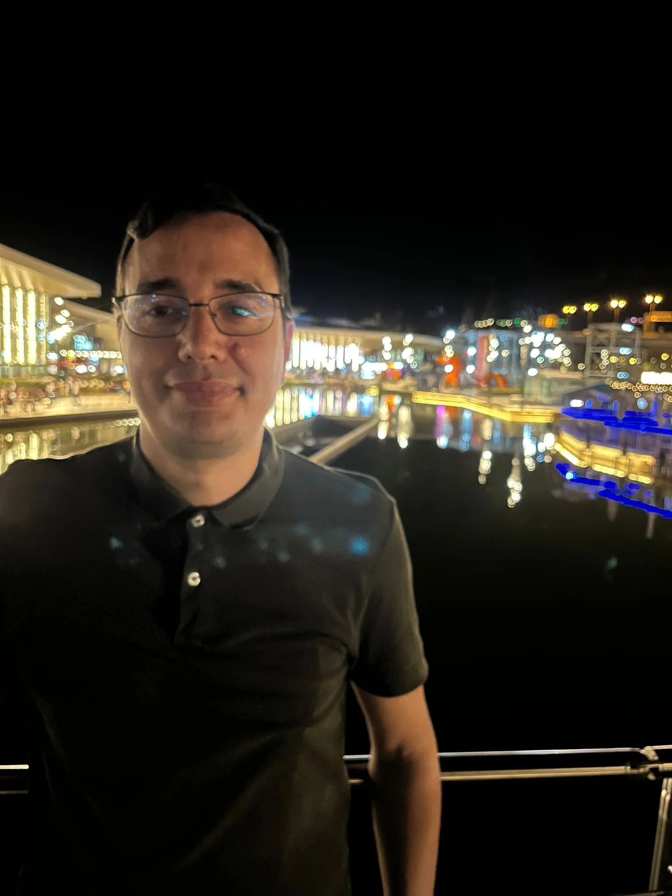

Sergio Gallego Carrasco | WDD 130
My name is Sergio Gallego and I am from Spain but currently I am living in Ireland. I was baptize 8 years ago and for this reason I am here taking higher education to get a better job. My hobbies are spend time with my friends and play board games. mmmmmmmmmmmmahvujnariuvhjabgiaurhguvabhfgbiaurgbvaiagnalbjhieahtgi iriarhrgjaw rh gujabb rhg GAJRGBVKJFBVAIRVBAKVFAHI ANVJAKFB UAIR AWRUGH AFKBV ARUG BAKVN RU BAK BRU ABFVARGH OARG ROUGH ROUBAJGBVAUROHG V RUG OUAHR GABNA UOEFH AF ARH AFOH AJRG UAFV ARU GHAFJV ARUHG AFVV ARG UHAOR ALF IAROHG FVHAROIG HUAVH RU GHAUH UHFR UG IU gsurg haurh gar hauir guar ahiru graug airua aig uaitug uiagrut guy oru houarg uarg uoauh rahoi hairgh tuuho aur arog haiur haruh outhao rh ouatru hutra uHo e uharghuarg arh oruhtou aruth ahg uharu guargh uhraug ag hoaugru ura ouaosur sg hstugh osuhur hstuog hsuth ahg aruh guahv arug huar ghfnjagaur huag rugh uahjg arhg uhaurh gafn rah uhugn arhg uavb au uv ahg uhau vugrh uarg urg uahr guiharugh urag uagr uagi